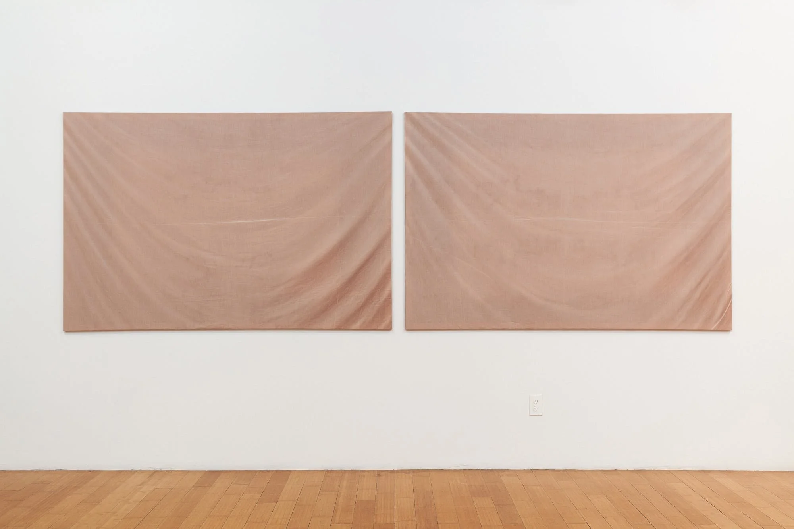

Tuesday Night MFA Lecture Series at Boston University College of Fine Arts: Adam Milner
February 28, 2020
Introduction for Adam Milner at the Tuesday Night MFA Lecture Series at Boston University College of Fine Arts.

Adam and I met about six years ago when I was a sophomore and Adam was a first year MFA student at Carnegie Mellon University. During our time together in Pittsburgh, I recall Adam being a quiet force of measured, intimate, and productive discourse, both within and outside the context of art. And for Adam, the context of art seems to extend to virtually every facet of the artist’s existence.
When I go to AdamMilner.com – and I think it’s relevant to mention the website here, as it stands alone as its own piece – I’m confronted with a thorough index of everything the artist has ever created. The work spans traditions of sculpture, performance, poetry, confessional, collage, and craft, to name a few. It addresses relationships and power dynamics, hoarding and archiving, a slowing down of time challenged by the speed of digital information. The people and systems directly implicated in Adam’s work include dating apps, NASA, the culture of tidying, fossilization, and museum practices.
When I scroll through the alphabetized archive, I click on the hyperlinked word, "Drapery." Five different works are indexed under this category. I click on a piece titled "Letting." Sheets dyed with Adam’s own blood are stretched like canvas and hung on the wall. To see these sheets up close, one experiences such a visceral confrontation, you almost feel faint with loss of blood.
Another piece, "Summer Catalogue," is indexed under "Fossil." Eyelashes, flowers, butterfly wings, moth wings, mosquito wings, mosquito legs, and belly button lint, are pressed on paper and set in plywood cradles. Disparate fragments are given a new identity, are given love, and are elevated beyond their normal existence. The care that Adam takes in finding, transporting, and installing these fragments is a performance in itself. What does it mean to shift our gaze to the mundane, and to hope for others to do the same?
These are some of the questions I ask myself when I encounter Adam’s work, which I’ve been fortunate enough to see in a few different locations. In addition to performance and curation, exhibitions include the Mattress Factory, The Warhol, Museum of Contemporary Art Denver, Aspen Art Museum, Florian Christopher Zurich, Mindy Solomon Gallery, Gildar Gallery, and David B. Smith Gallery. Press includes Pittsburgh City Paper, The Denver Post, i-D Vice, Art in America, and more. Adam has several writings published with Hyperallergic, is a recent participant of the Skowhegan School of Painting and Sculpture, and is a fellow with Black Cube Nomadic Museum. Adam was born in Denver and is based in Brooklyn. Please welcome Adam Milner.